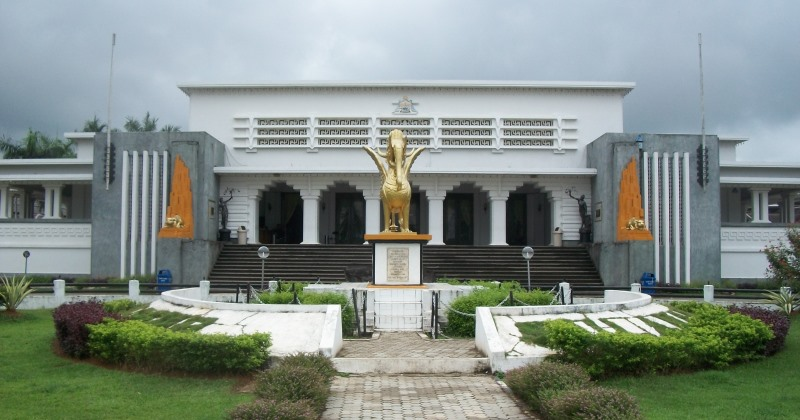
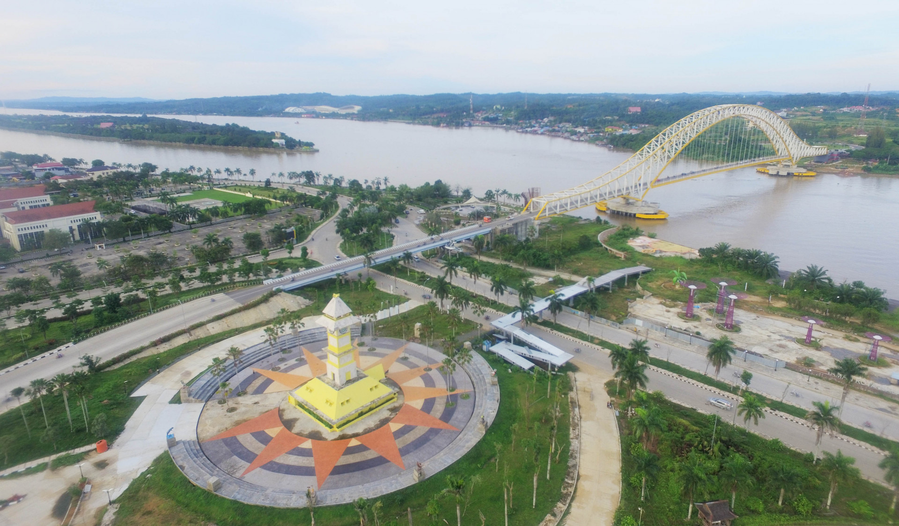
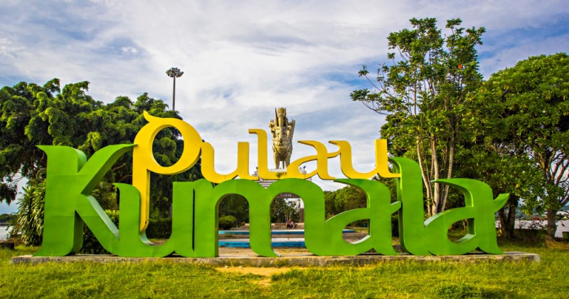
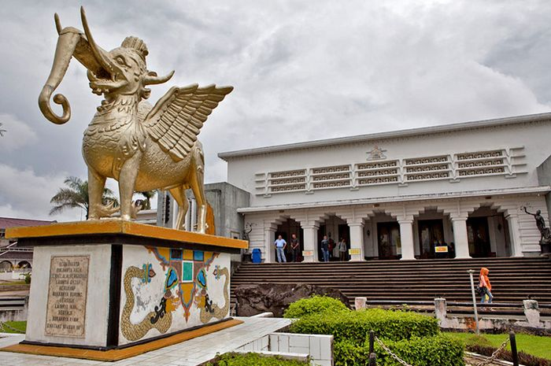

Tenggarong memiliki julukan Kota Raja. Julukan tersebut mengingat wilayah ini dulunya merupakan ibu kota Kesultanan Kutai Kartanegara ing Martadipura dan tempat makam raja kerajaan tersebut
Sejarah

Kota Tenggarong sejak awal berdirinya merupakan ibu kota Kesultanan Kutai Kartanegara.
Sejarah menulis, semula kota ini bernama Tepian Pandan ketika Sultan Aji Imbut memindahkan ibu kota kerajaan dari Pemarangan yang
saat ini adalah wilayah Desa Jembayan. Oleh Sultan Aji Imbut, nama Tepian Pandan kemudian diubah menjadi Tangga Arung yang berarti rumah raja.
Namun pada perkembangannya, Tangga Arung lebih populer dengan sebutan "Tenggarong" hingga saat ini.
Geografis

Kota Tenggarong terletak pada 116°47' - 117°04' Bujur Timur dan 0°21' - 0°34' Lintang Selatan. titik pusat tertinggi kota Tenggarong dari permukaan laut ± 500 m.
Tenggarong dilewati oleh aliran sungai Mahakam yang merupakan salah satu sungai terbesar di Kalimantan Timur. Kondisi lahan di Tenggarong cenderung lahan rawa di daerah dataran dekat tepian sungai dan berbukit.
Suhu udara rata-rata di kota Tenggarong adalah 30 °C, dengan curah hujan tahunan rata-rata 1500-2000 mm per-tahun
Wisata
Berbagai obyek wisata dimiliki Kecamatan Tenggarong, Kabupaten Kutai Kartanegara (Kukar) seperti wisata Pulau Kumala, Planetarium, Waduk Panji Suka Rame, Musium
Kayu, Museum Mulawarman hingga makam para raja ada di Kota Tenggarong. Selain itu berbagai even berskala lokal, Nasional hingga Internasional sering digelar di kecamatan tersebut.
Tak heran kalau kecamatan tersebut saat ini masuk sebagai salah satu Destinasi Pariwisata Nasional.
Pulau Kumala

Pulau Kumala merupakan daerah delta di Sungai Mahakam yang memanjang di sebelah Barat Kota Tenggarong, Kabupaten Kutai Kartanegara.
Pada awalnya Pulau Kumala ini merupakan tempat untuk ratusan ekor bekantan dan berbagai jenis reptil liar Kalimantan. Kemudian pada tahun 2002 Pemkab Kukar
membangun Pulau Kumala menjadi tempat rekreasi lengkap dengan resor dan alat transportasinya.
Museum Mulawarman

Museum Mulawarman merupakan salah salah satu destinasi wisata yang berada di Tenggarong Kutai Kartanegara (Kukar) di Kalimantan Timur (Kaltim).
Museum Mulawarman bukti perjalanan sejarah sejak tahun 1936. Walaupun begitu banyak sejarah tentang peradaban di Kalimantan yang digambarkan melalui museum ini,
Ciri khas Museum Mulawarman pada halaman depan museum terdapat duplikat Lembu Suana yang merupakan lambing Kerajaan Kutai Kartenegara dan kolam berbentuk naga
yang merupakan lambing perjalanan hidup dan penjaga alam semesta yang telah menjadi bagian dari mitos masyarakat Kutai.